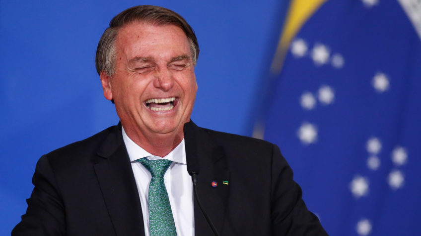

Bolsonaro
Jair Messias Bolsonaro GOMM (Glicério, 21 de março de 1955) é um militar reformado e político brasileiro, filiado ao Partido Liberal (PL). É o 38º presidente do Brasil desde 1º de janeiro de 2019, tendo sido eleito pelo Partido Social Liberal (PSL).
Luiz Inacio Lula ( Lula )
GCTE. GCMM (nascido Luiz Inácio da Silva; Garanhuns, 27 de outubro de 1945), mais conhecido como Lula, é um ex-sindicalista, ex-metalúrgico e político brasileiro, filiado ao Partido dos Trabalhadores (PT). Foi o 35.º presidente do Brasil entre 1 de janeiro de 2003 e 1 de janeiro de 2011.